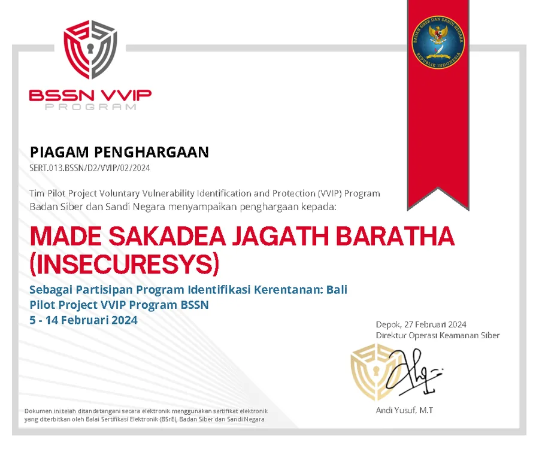
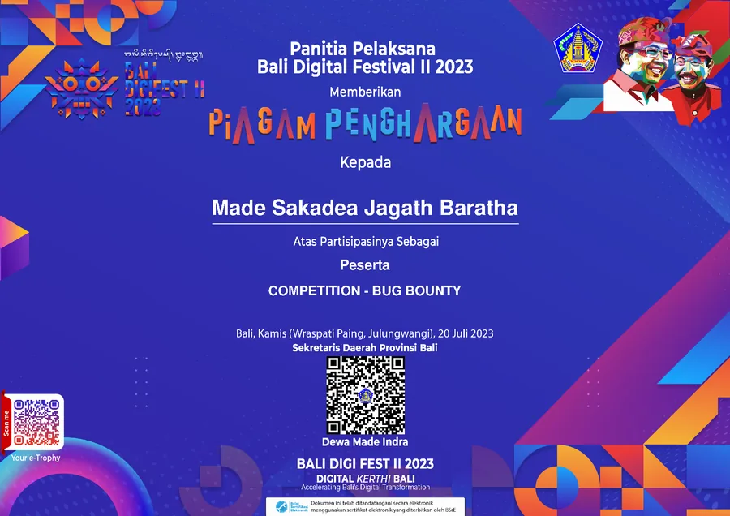
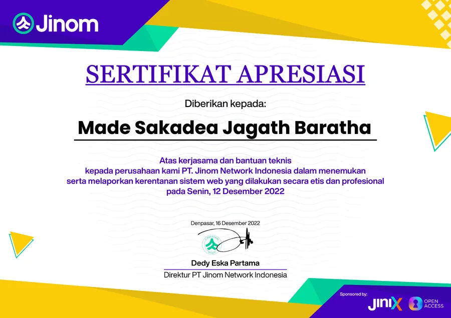
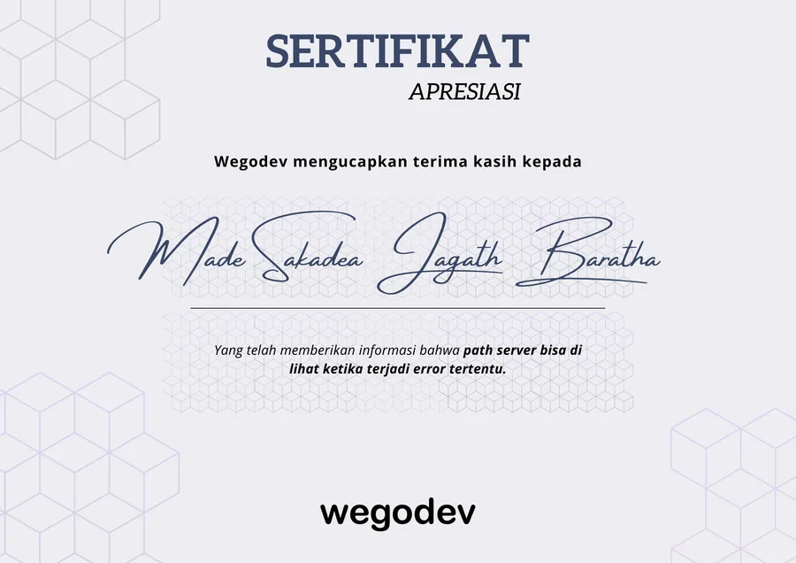
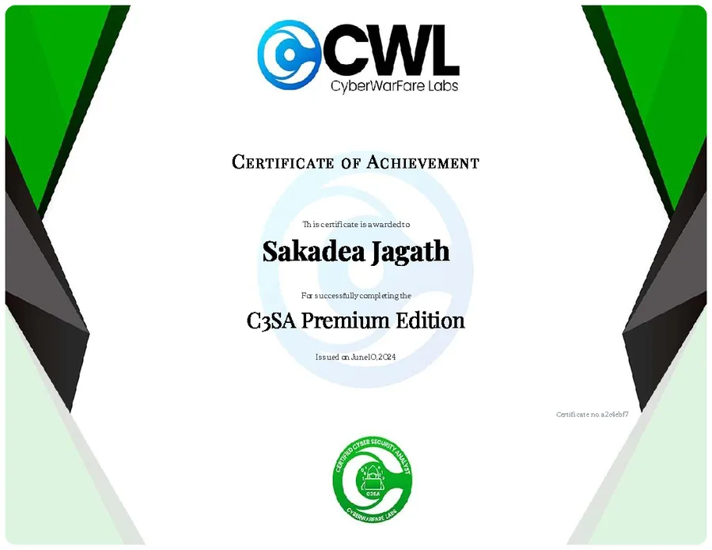

Penetration testing
Web applications · Backend services · Infrastructure · Vulnerability assessment
Penetration testing · Security research
Hi, I’m Made Sakadea Jagath Baratha.
A Penetration Tester at PT Protergo Siber Sekuriti, focused on finding vulnerabilities, understanding their impact, and helping teams verify the fixes.
01 / ABOUT
My focus is penetration testing and vulnerability research across web applications, backend services, and infrastructure. I investigate weaknesses, validate findings, and document their impact with clear, reproducible evidence.
I work with development teams on remediation and retesting, and build Python automation to support security findings and reporting. My research experience includes bug bounty participation and responsible vulnerability disclosure.
Web applications · Backend services · Infrastructure · Vulnerability assessment
Vulnerability validation · Impact analysis · Bug bounty · Responsible disclosure
Reproducible findings · Remediation guidance · Retesting · Python automation
02 / SECURITY EXPERIENCE
Penetration testing, vulnerability assessment,
and incident analysis in practice.
PT Protergo Siber Sekuriti
Contract · South Jakarta, Jakarta, Indonesia · Hybrid
Test web applications, backend services, and infrastructure. Validate vulnerabilities, document impact, and work with developers on remediation and retesting.
Build Python automation to support security findings and reporting.
PT Digital Sekuriti Indonesia
Performed penetration testing and vulnerability assessments for web applications, backend services, and infrastructure. Validated findings, documented impact, and coordinated remediation and retesting with development teams.
Built Python automation to create GitLab issues from security findings and track remediation.
Djoin Id
Tested web servers and infrastructure, investigated security incidents, and supported patches and remediation. Communicated technical findings and security risks to the teams responsible.
THE FOUNDATION
ITB STIKOM Bali
May 2016 — Apr 2022SMK Wira Harapan
May 2013 — May 201603 / SECURITY RESEARCH
Responsible disclosure acknowledgements
and participation in security programs.

Participated in the BSSN VVIP vulnerability identification program in Bali.

Participated in the Bug Bounty Competition at Bali Digital Festival II.

Recognized by PT Jinom Network Indonesia for ethically finding and reporting web vulnerabilities.

Recognized for reporting server-path disclosure triggered by specific application errors.
04 / SECURITY CERTIFICATIONS
Cybersecurity, network administration,
and computer forensics training.

CYBERWARFARE LABS · 2024
C3SA Premium Edition
Credential period: Jun 2024 — Jun 2026View certificateNETWORK & FORENSIC FOUNDATIONS
Credential period: Mar 2022 — Mar 2025
Credential period: Mar 2022 — Mar 2025
Credential period: Feb 2022 — Feb 2024
Credential period: Sep 2019 — Sep 2021
05 / ADDITIONAL BACKGROUND
Earlier backend experience that informs how I test applications today.
Djoin Id
Developed features, resolved backend bugs, and maintained Laravel applications with a focus on stability and reliable application behavior.
ITB STIKOM Bali
Built a guardianship scheduling module and supported the SION academic information system API. Maintained backend services for academic workflows and internal systems.
A registration system for National Technology Day in Bali, built as part of the registration team in 2019.
A scheduling module for ITB STIKOM Bali, supporting the university’s academic advising workflows.
06 / GET IN TOUCH
Have a penetration testing engagement or a security research topic in mind?
I’d love to hear about it.